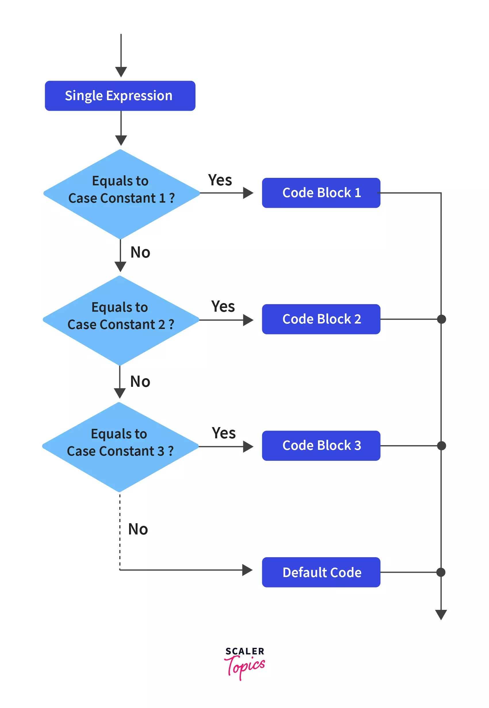
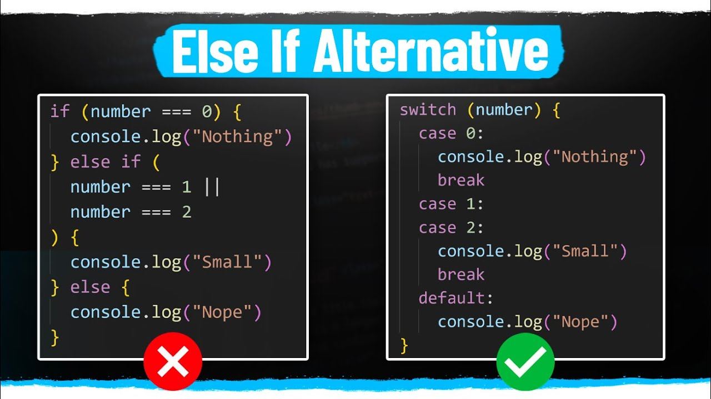
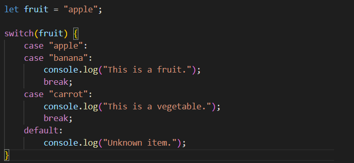

Switch case operatori...
JavaScriptda switch operatori ko'p shartli tekshiruvlarni amalga oshirishda yordam beradi. Bu if...else tuzilmalariga o'xshaydi, lekin ba'zi hollarda ko'proq qulay va tushunarli bo'lishi mumkin. switch operatori berilgan ifodani tekshiradi va ushbu ifoda natijasiga mos keladigan holatni (case) bajaradi.
Javascript dasturlash tilida qaror qabul qilishda Switch statementidan foydalaniladi. Switch statement berilgan ifodani baholab, shunga to'g'ri keluvchi kod blokni ishga tushiradi.
Break kalit so'zi ixtiyoriy. Agar break iborasi uchrasa, switch operatori shu qismda ishini toxtatadi. Agagr break operatori ishlamasa, mos keladigan holatdan keyingi holatlar ham ishga tushadi va ekranda paydo bo'ladi.
Deafault kalit so'zi ham ixtiyoriy bo'lib, agar ifoda tepada berilgan caselarning hech biriga to'g'ri kelmasa, Deafault bloki ishga tushadi.
Bir nechta shartlarni tekshirish: switch bir nechta holatlarni tekshirishda if...else ga nisbatan aniqroq va osonroq bo'lishi mumkin.
Kod tushunarliligi: Ko'p shartlarni tekshirish kerak bo'lganda switch kodi qisqaroq va tushunarliroq bo'lishi mumkin.
Kodni boshqarish: Agar bir xil kodni bir nechta holat uchun bajarish kerak bo'lsa, switch qulay vosita bo'lib xizmat qiladi.
Ba'zan break operatorini ishlatmasdan bir nechta case uchun bir xil kodni bajarish kerak bo'lishi mumkin:
